3D姿态的描述方式¶
旋转矩阵¶
旋转矩阵的表达形式如下：
优点：
- 方便矩阵的变换计算
- 其形式直观的描述了变换后的坐标系三个轴在变换前坐标系下的向量
① 如果一个变换矩阵为单位矩阵：
那么其三个轴的向量分别为：
第一列：\vec X = (1, 0, 0)
第二列：\vec Y = (0, 1, 0)
第三列：\vec Z = (0, 0, 1)
② 如果我们绕X轴旋转-90度（顺时针转90度），则变换矩阵如下：
则新的坐标系三个轴分别为：
第一列：\vec X = (1, 0, 0)
第二列：\vec Y = (0, 0, -1)
第三列：\vec Z = (0, 1, 0)
如下图：
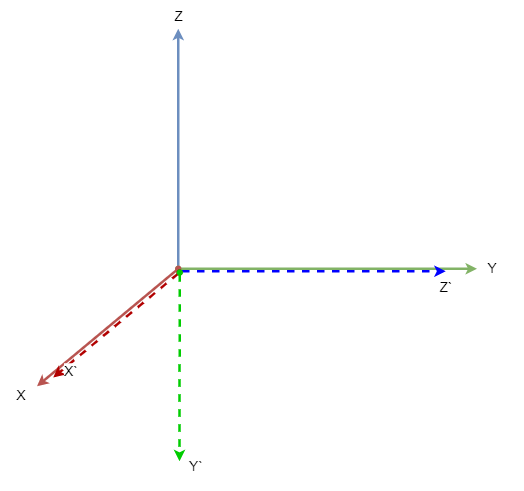
③ 如果我们先绕X轴旋转-90度（顺时针转90度），然后绕之前固定的Z轴旋转-90度（顺时针转90度），则变换矩阵如下：
(等同于： 先绕Z轴旋转-90度（顺时针转90度），然后绕变换后的X轴旋转-90度（顺时针转90度）)
则新的坐标系三个轴分别为：
第一列：\vec X = (0, -1, 0)
第二列：\vec Y = (0, 0, -1)
第三列：\vec Z = (1, 0, 0)
如下图：
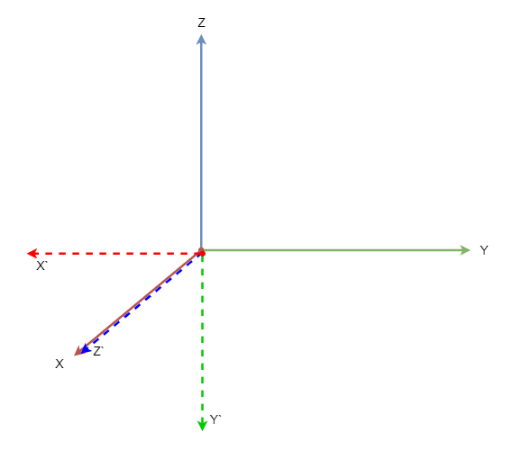
整个流程如下：
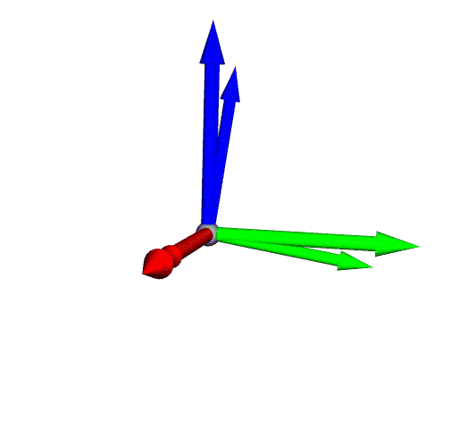
缺点：
- 参数过多，一个矩阵就有9个变量，包含三个角度每个角的sin和cos值，共6个单位数据
- 表述不够清晰易懂，无法了解变换过程
欧拉角 & RPY¶
欧拉角¶
欧拉角是由Leonhard Euler 引入的，用于描述刚体方向的三个角，在3维欧几里得空间中描述这样一个方向，需要三个参数。欧拉角是一种更加通用及实用的旋转方式，其特点是绕运动的坐标轴旋转，即每次旋转，都是绕着运动变化后的自身坐标轴进行旋转。由于其旋转轴是绕自身坐标系的，又称之为内旋（Intrinsic Rotation）
假如两个坐标系A和B重合，那么将坐标系B绕自身Z轴旋转α，然后绕自身Y轴旋转β，最后绕自身X轴旋转γ，此时其旋转矩阵的计算方式为连续右乘，如下：
欧拉角是用来表示三维坐标系中方向和方向变换的。欧拉角其实还可以细分为欧拉角(Euler-angles)和泰特布莱恩角(Tait-Bryan-angles)，这两种方法都利用了笛卡尔坐标系的三轴作为旋转轴，主要区别在于旋转轴的选取顺序。

欧拉角的旋转轴选取顺序有 (x,y,x),(x,z,x),(y,x,y),(y,z,y),(z,x,z),(z,y,z) 这6种，其选取顺序是a,b,a的顺序，也就是绕a轴旋转某角度后，绕新生成的b轴旋转一个角度，最后绕两次旋转以后的a轴再旋转一个角度，以此表示最终的方向。
泰特布莱恩角的旋转轴选取有 (x,y,z),(x,z,y),(y,x,z),(y,z,x),(z,x,y),(z,y,x) 这6种，也就是历遍笛卡尔坐标系的三轴，比如我们最常见到的Roll-Pitch-Yaw角等同于其中的 (z, y, x) 顺序。
RPY¶
RPY是Roll翻滚（绕X），Pitch俯仰（绕Y），Yaw偏航（绕Z）的缩写，即如我们所讲到的旋转示例，先绕X轴旋转 \gamma 度、接着绕Y轴旋转 \beta 度、最后绕Z轴旋转 \alpha 度。这里的每一步旋转，都是绕着固定的坐标系进行旋转的。由于其旋转轴是绕固定坐标系的，又称之为外旋（Extrinsic Rotation）
假如两个坐标系A和B重合，那么将坐标系B绕A坐标系的X轴旋转γ，然后绕A坐标系的Y轴旋转β，最后绕A坐标系的 Z轴旋转α，此时其旋转矩阵的计算方式为连续左乘，如下：
可见，RPY旋转绕固定轴旋转就等同于欧拉角按照 (z, y, x) 方式旋转绕运动轴旋转的结果，尽管他们的旋转所经历的过程不同。
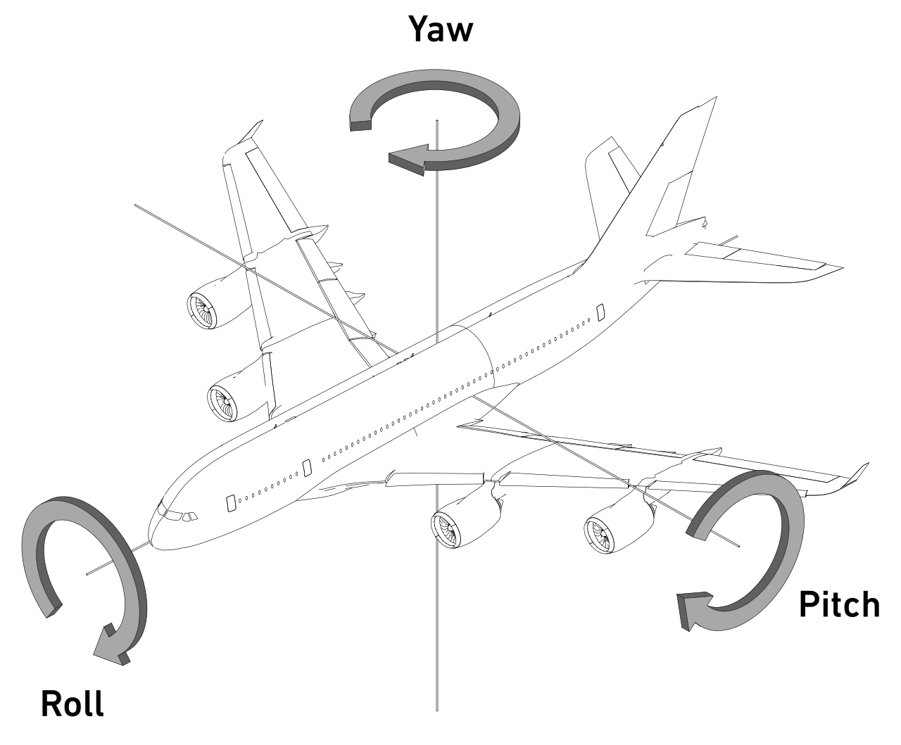
- 绕X轴旋转->翻滚Roll

- 绕Y轴旋转->俯仰Pitch
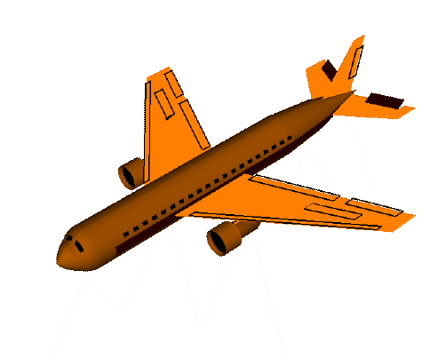
- 绕Z轴旋转->偏航Yaw

总结来看：
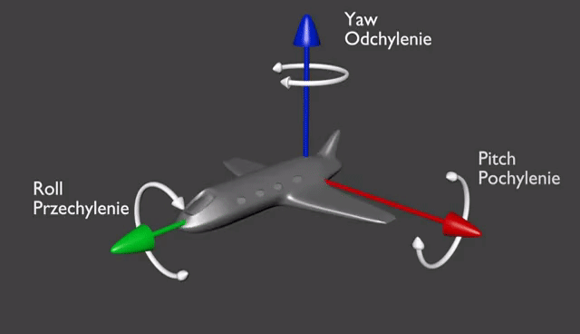
万向节死锁¶
不管是欧拉角还是RPY都会有一个严重的问题，会导致万向节死锁。即Pitch俯仰角不能为90°，否则发生万向节死锁。由于万向节的运动方式和欧拉角以及RPY类似，所以我们可以用其进行类比分析。
万向节死锁是指在三个万向节中的两个万向节的轴被驱动成平行状态时，系统将“锁定”成在退化后的二维空间运动，这种情况使三维的三个万向节自由度失去了一个自由度。
“死锁”一词具有误导性：我们并没有限制万向架。 所有三个万向节仍然可以围绕各自的悬架轴自由旋转。 然而，由于两个万向架的轴相对平行，所以没有可用的万向架来适应围绕指定一个轴的旋转。

什么是万向节呢？¶
万向节（英语：Gimbal）为一个有枢纽的装置，它使得一物体能以单一轴旋转。由彼此垂直的枢纽轴所组成的一组三只平衡环架，可使架在最里部环架的物体维持旋转轴不变，其应用在船上的陀螺仪、罗盘、饮料杯架等用途，而不受船体因波浪上下震动、船身转向的影响。

这也是我们常见的手机稳定器的原理
万向节正常转动¶
我们把万向节的三个轴向分别对应到指定颜色：红色R为X轴，绿色G为Y轴，蓝色B为Z轴，假如此万向节固定在一行驶的艘船上，底部的Z左下方对应着船头。
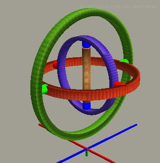
翻滚
假设船体在前进方向发生了左右的摇晃，也就是左右的倾斜Roll翻滚。由于转子和旋转轴具有较大的惯性，只要没有直接施加扭矩，就会保持原有的姿态。则会出现如下情况：
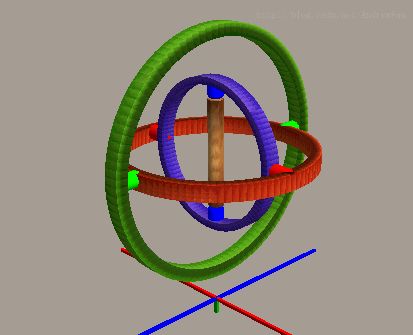
俯仰
再次假设，船体发生了沿着前进方向前后的摇晃，也就是Pitch俯仰。同样，由于存在相应方向的可以相对旋转的连接头（红色连接头），转子和旋转轴将仍然保持平衡，如下图：
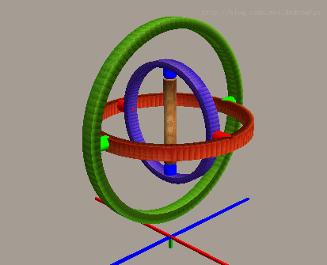
偏航
最后，假设船体进行了左右转弯，也就是Yaw偏航，相对旋转发生在蓝色连接头，如下：
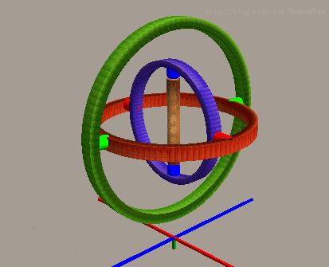
在船体发生Pitch、Yaw、Roll的情况下，万向节都可以通过自身的调节，而让转子和旋转轴保持平衡。
万向节死锁转动¶
一切看起来很正常。但是，船体发生了剧烈的变化，此时船首仰起了90度。如下：

此时，就不那么美好了，里边装的物体就会不可避免的进行翻转。
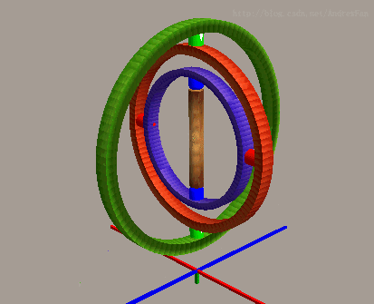
之前万向节之所以能通过自身调节，保持平衡，是因为存在可以相对旋转的连接头。在这种情况下，在翻滚的X轴方向已经不存在可以相对旋转的连接头了。
从上图中，我们清楚地看到：
- 红色连接头：可以给予一个相对俯仰的自由度。
- 绿色连接头：可以给予一个相对偏航的自由度。
- 蓝色连接头：可以给予一个相对偏航的自由度。
没错，三个连接头，提供的自由度只对应了俯仰和偏航两个自由度，翻滚的自由度丢失了。
如何避免万向节死锁？¶
- 在欧拉角的12中旋转顺序中选择适合场景的方式
- 可以使用四元数的方式计算旋转。
参考：
四元数¶
由于欧拉角的数值变换为非线性的，计算过程会产生奇异值，则为了从数学上避免类似万向节死锁的问题。我们使用四元数可以帮助四轴飞行器更好的旋转，避免“翻车”。
为什么需要四元数¶
四元数存储了旋转轴和旋转角的信息，它能方便的描述刚体绕任意轴的旋转。其形式为：
其中： x^2+y^2+z^2+w^2=1
优点：
如果俯仰角比较小的情况下，使用欧拉角计算，飞行器可以正常的修正姿态，看起来一切正常：

如果使用欧拉角计算，俯仰角比较大时：
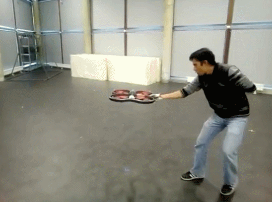
使用四元数计算，俯仰角比较大时：
详细参见：https://www.youtube.com/watch?v=0VAc_G79POE
缺点：
-
数据不够直观
-
运算比较复杂
四元数的与旋转矩阵互转¶
- 旋转矩阵->四元数
如果已知四元数 q=(x,y,z,w) ，则对应的旋转矩阵如下：
- 四元数->旋转矩阵
如果已知旋转矩阵如下
则对应的四元数为：
四元数和欧拉角实时对比：https://quaternions.online/
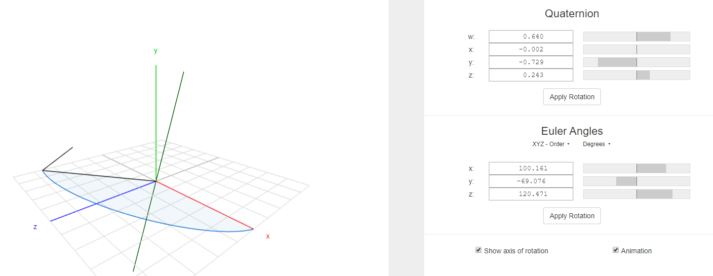
其他描述方式¶
除了以上的旋转矩阵、欧拉角、RPY、四元数，在编程过程中，还会有以下两种格式，这里不做展开。
轴角对（Axis-angle）：可以和四元数直接互转
旋转向量（Rotation Vector）：可以和旋转矩阵通过罗德里格斯公式（Rodrigues's Formula）相互转换
多种3D姿态在线转换：https://www.andre-gaschler.com/rotationconverter/